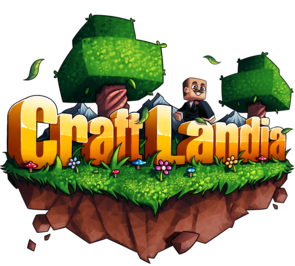

Como era jogar antigamente nos Servidores e versões antigas de Minecraft?
Quando eu comecei a jogar?
Minecraft na época era um jogo bem popular na qual as pessoas continuam jogando até hoje, a época dos famosos youtubers como Tazercraft, VenomExtreme, Rezende, Authentic Games, nesse mesmo ano em dia 2 de Maio saiu a nova versão dele 1.5.2 que foi essa versão em que eu comecei a jogar, que foi pela pirataria de um minecraft chamado de CraftLandia, um servidor famoso BR que até hoje muitas pessoas aindam jogam nele, tanto que o próprio
JazzGhost gravou um vídeo jogando no servidor um mini game chamado Build Battle. O foco deste site não é sobre eles no geral, e sim sobre mim e como era ser uma criança de 6 anos jogando Minecraft naquela época, então vamos começar com o primeiro servidor em que joguei.
Aqui está o link do vídeo do Build Battle! BuildBattle

Vamos começar com o que é CraftLandia?
Ele era o maior servidor BR da época de pirataria contendo os seguintes minigames incluidos, Survival(sobrevivência),
BuilBattle, Block Party, Speed Builders, SkyWars, SkyBlock e Hide and Seek. Esses minigames vieram depois da nova versão
1.7.2, mas naquela época ja existia o survival.
O survival era um mundo de minecraft aberto na qual juntava mais de 1000 jogadores em um server, na qual eles podiam
criar construções nos lugares que quiserem, interagirem um com o outro, se matar ou até mesmo criar parcerias nas quais
você podiam utilizar um comando chamado /add "nick do jogador" para ser amigo dela (a pessoa na qual você enviou o
pedido de amizade deve aceitar tambem) ou você poderia entrar no clã dela caso ela tivesse um, assim você teria uma tag
antes do seu nickname dizendo em qual clã você fazia parte.
Quando entrei no começo desse survival eu sempre esquecia minhas senhas de jogadores e sempre tinha que criar uma nova
nova, então eu tinha feito várias construções no meu nome em diversos biomas em que quase não tinha ninguem no lugar
que eu estava. Uma no desserto no meio do nada, na qual eu vivia de biscoito, onde eu fazia uma "lojinha voluntaria"
na qual deixava comida para as pessoas que passavam. No meio do pantano onde vivia no meio de vários slimes e morria
toda hora. Mas a primeira vez que eu entrei eu tive ajuda de um cara chamado "Tropa564" (eu não lembro os numeros)
ele tinha 16 anos e ele me ensinava como jogava Minecraft, sendo as coisas mais básicas, a gente morava no meio de uma floresta
e eramos vizinhos, eu tinha uma plantação de trigo e sempre que eu logava fazia biscoitos para ele, por ele ter
me ensinado como jogava. Depois de um tempo ele parou de logar então meio que eu parei de jogar.
Quando lançou a versão 1.7.2, o lançamentos dos minigames, eu passava o dia inteiro jogando build battle e block party, o
build battle funciona da seguinte forma, todos os jogadores escolhiam um tema e o tema mais votado seria o que todos deveriam
construir, a construção que for mais avaliada acaba ficando no pódio tendo 1°, 2° e 3° lugar. O Block Party é como se fosse um dança das cadeiras, só que em vez de sentar você tinha um bloco de uma cor quando o tempo
acabava, e seu objetivo era ficar em cima dessa cor sem cair no buraco que era gerado, pois quando o tempo e a musica
acabava só ficava o quadrado do bloco na qual a cor foi selecionada. A ultima pessoa que sobrevivesse ganhava o jogo.
Depois de um tempo uma nova atualização surgiu, a 1.8 na qual fez com que novos servidores e mais mini-games surgissem sendo um
deles o EggWars.